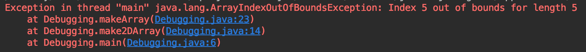
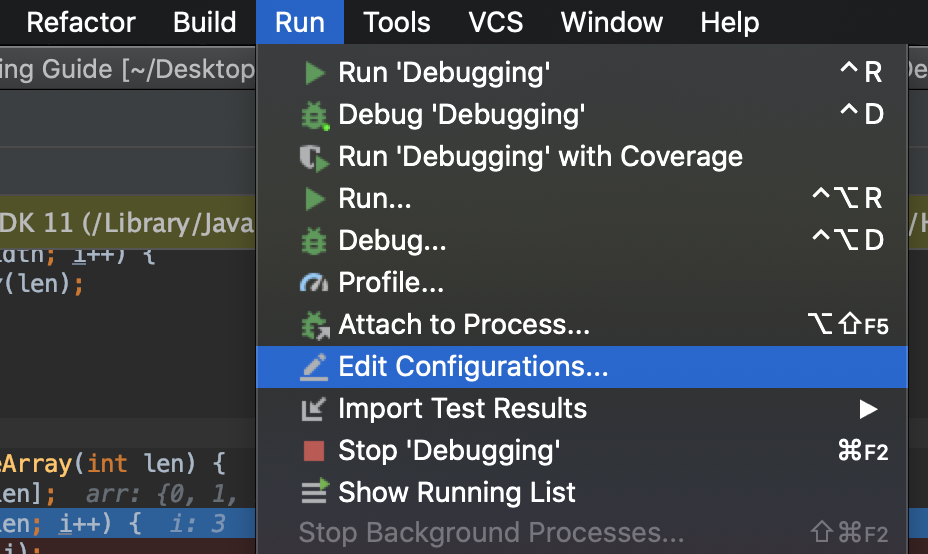
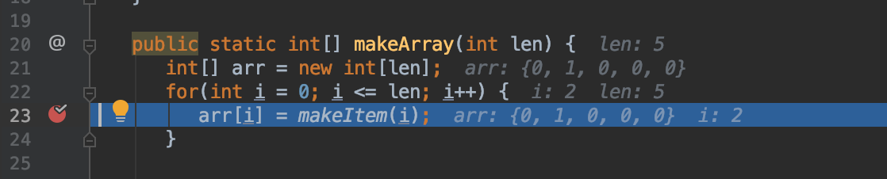
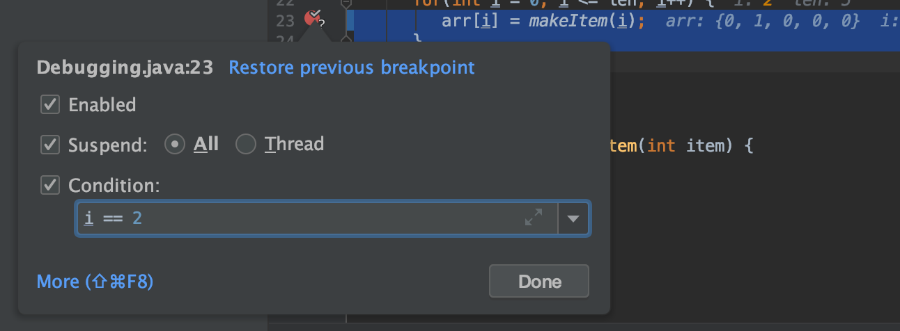
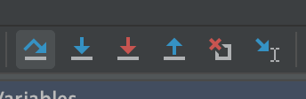
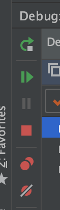
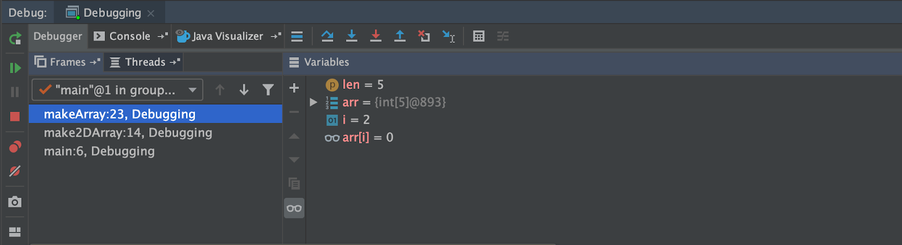
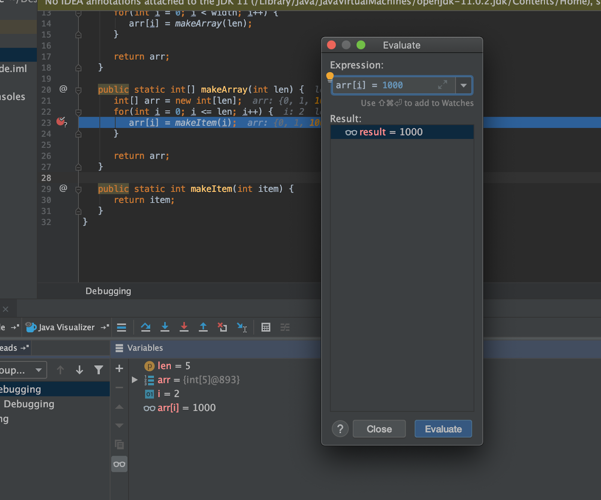
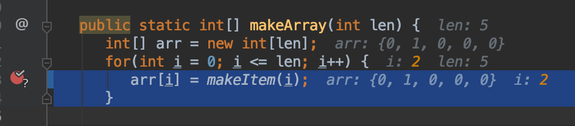

Using the Debugger
Author: Anjali Kantharuban
What is Debugging?
Whenever you write a lot of code, as you do in this class, you will come across errors of various types. Some of these errors, like syntax errors will be easy to catch because the compiler will let you know exactly where they are. Unfortunately, errors in the logic of your code are not so simple. They are less likely to be caught by the system because oftentimes your code compiles, it just returns the wrong value. IntelliJ (and most other IDEs) provide an array of tools that will help you trace through your code and see exactly where an inconsistency occurs.
Why Should I Learn to Debug?
The ability to debug is an extremely important part of being a programmer - no matter how clever you are, if it takes you a very long time to find out where your code is messing up, it will take you a very long time to finish a project. Every single programmer needs to know how to effectively debug. Within the scope of this class, learning to debug on your own will save you from having to wait in office hours for a TA to help you. With that in mind, this cheat sheet will give you all the tools you need to debug various types of errors!
Can I Use Print Statements Instead?
Technically, yes. There are times when print statements are more efficient, such as when you only need to track one variable through a loop in a fairly isolated portion of code. You are free to debug at first with print statements and then use the debugger if you are still struggling to find the bug after 5 minutes. The caveat here is that if you come to office hours without having had stepped through your code, we will point you towards this guide instead of finding your bug.
Understanding The Stack Trace

When you see an exception like this, this means your computer caught a mistake while it was running your program. To be helpful, before it exits out, your computer tells you all the information you need to know to find out where the error happened. The first line follows this format:
[Which thread errored] [What error occurred] [Any more information about the error]
What we want to focus on is the last two segments. In this case, that looks like:
Exception in thread “main” java.lang.ArrayIndexOutOfBoundException: Index 5 out of bounds for length 5
This gives you two pieces of information:
-
The error was an Array Index Out of Bounds Exception.
-
We tried to access item 5 in an array of length 5.
This tells you what happened, but not where it happened. That’s where the stack trace is useful. The three (or however many) lines under the header describe where the computer was in the code when it errored. The top trace line is what the computer was executing when it crashed and the list describes what functions called each other in reverse order. Here, we see that our main function called make2DArray on line 6. Then, make2DArray called makeArray on line 14. Finally, the code errored on line 23 within makeArray. Clicking on the blue links will jump you to that part of the code, so you don’t have to spend time scrolling. Knowing this, you can start debugging the specific sequence of calls that caused the error.
What Does This Error Mean
Perhaps you have read the stack trace, but you don’t understand what the error means. For the most part, Java errors are named such that they are understandable without prior knowledge, but in case you come across something you don’t recognize, here’s a cheat sheet:
| Error | What it Usually Means |
|---|---|
| ___ expected | The parser can’t make sense of the line because there’s a character that it doesn’t understand or a missing character. |
| cannot find ___ | You are calling a method or class that the computer doesn’t have access to. |
| Illegal start of expression | You are missing a closing brace somewhere before this line. |
| Illegal start of type | You wrote code outside of a function body that shouldn’t be there. |
| Incompatible types – expected ___ | You are trying to assign something to a variable that is not the same type. |
| Missing method body | Your function declaration line has a semicolon. |
| Missing return statement | You should be returning something in this method but you aren’t. |
| Non-static method cannot be called from a static context | You called a method on the class itself instead of an instance of the class. |
| *Program Freezes* | You’re likely stuck in some sort of logical loop. |
Running Code Through IntelliJ

To use the debugger, you need to run your code through IntelliJ instead of through the console.
-
From the main menu, go to Run > Edit Configurations.
-
Enter any arguments for your program into the field marked Program Arguments. These are the arguments you would pass into the command line if you were to run it in the console.
-
To run the debugger, either click Run > Debug or right click on the green arrow next to the function and select Debug.
Setting Breakpoints
To examine how the code operates at runtime, we set breakpoints. Breakpoints pause your code at the line they are set so that you can see the state of all the variables around where an error occurred. To set a breakpoint, click on the space between a line number and the code:

This kind of breakpoint just pauses the code the first time your computer comes across this line. If you are in a situation where the error only occurs when a variable is set to a certain value, you can set a conditional breakpoint.

To do this, set a normal breakpoint and then right click the red circle that appears. Now, you can set the breakpoint condition in the given field. Your condition can be any True/False statement that would compile at this point in the code. This means you have to use variables that already exist in the current frame, but they don’t necessarily have to be referenced in the current line.
Stepping Through Code
Top Toolbar:

To step through code, you need to understand the toolbar at the top of the debug view. To see their names, hover over the icons. From left to right, they are:
| Button | What It Does |
|---|---|
| Step Over | This allows you to execute the current line of code and move on to the next line in this frame. |
| Step Into | This allows you to step into any function calls in the current line given the functions are yours. |
| Force Step Into | This allows you to step into any function calls in the current line even if they are from some third party library. You should not need to do this. |
| Step Out | If you are in a function or loop, this allows you to skip the rest of the frame, essentially bringing you out to wherever this function was called. |
| Drop Frame | This allows you to reset the current frame by returning to the previous frame where it was called. This is useful if you missed the part of a function you were trying to see by essentially letting you rewind time. |
| Run to Cursor | If you are running in debug mode, you can quickly jump to areas of interest in the code by clicking run to cursor. This will act as if there is a temporary breakpoint set wherever your cursor is. |
Left Toolbar

There is also a second toolbar along the left side of the debug menu. This menu is for more general controls. From top to bottom they are:
| Button | What It Does |
|---|---|
| Rerun | Rerun the debugger with the same settings as the current run. |
| Resume Program | Continues the program until it hits the next breakpoint. |
| Pause Program | If your program seems like it’s freezing, run it in debug mode with no breakpoints and click pause when your program freezes. It will most likely pause within whatever logical loop is causing the freeze. |
| Stop Program | If you’re done debugging, you can click this to end the program early. |
| View Breakpoints | This opens up a window that displays all your current breakpoints. Here, you can edit their settings and toggle them on/off. |
| Mute Breakpoints | Toggles all breakpoints on/off. |
Analyzing the Current State
There are two places where you can get information about the state of your program while in debug mode.
Debug View:

Firstly, in the debug view there are two columns:-
The first column shows the stack trace up until this point. Each line describes a frame, in order of narrowest to widest. The name of the frame is first and refers to the name of the function called. Then, we see the line number we are currently on for that frame. In this example,
make2DArraycalledmakeArrayon line 14, so it remains on that line untilmakeArrayfinishes running. -
The second column lists all the variables in the current frame, which includes any global variables. You can’t see variables that don’t exist in the current frame. Here you can see what value they hold as of the line you are on.
If you want more information than just the values of each variable, there’s a button called evaluate expression in the toolbar. Pressing this allows you to essentially insert lines on the fly to the program.

For instance, here we have inserted the expression arr[i] = 1000 and clicked evaluate, which is reflected in the Result Panel and in the Variables Panel. Essentially, it is as if we inserted the line arr[i] = 1000 before arr[i] = makeItem(i). A good use of this functionality is to ensure that two objects in your code are equal (rather than being two instances of the same class) by evaluating a == b which can be difficult to tell from the Variables Panel alone. This has the added benefit of not changing any values in the code, so you don’t have to worry about accidentally modifying the behavior you trying to observe.
Code View:
The second place to get information is on the code itself.

In debug mode, IntelliJ shows the value of every variable referenced in each line of code next to the line. In addition, it highlights the value of whatever variable was most recently changed.
More Resources
If you want more details on using the IntelliJ debugger, JetBrains has some guides: